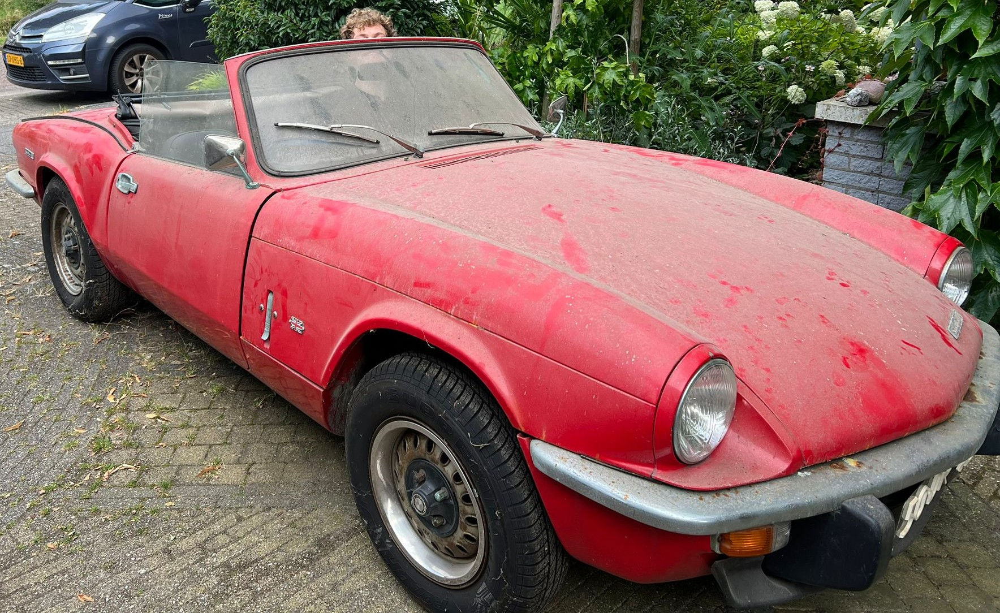
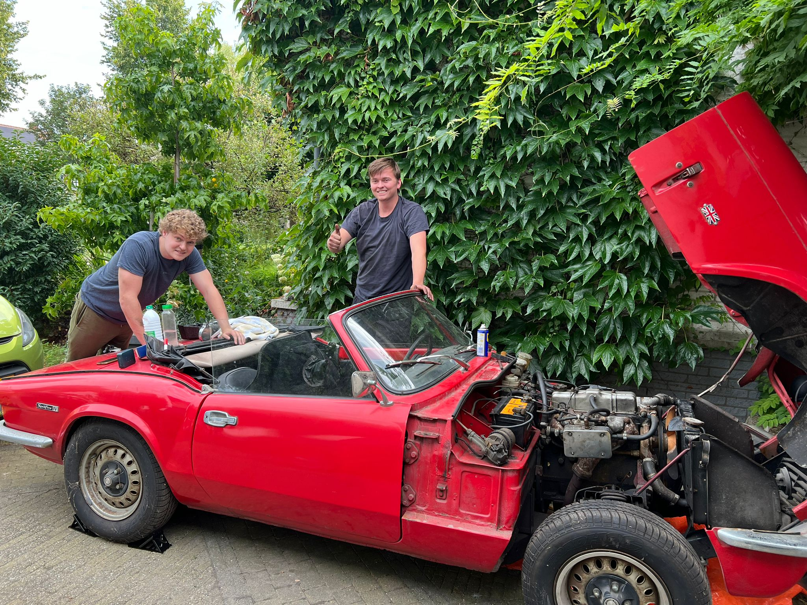
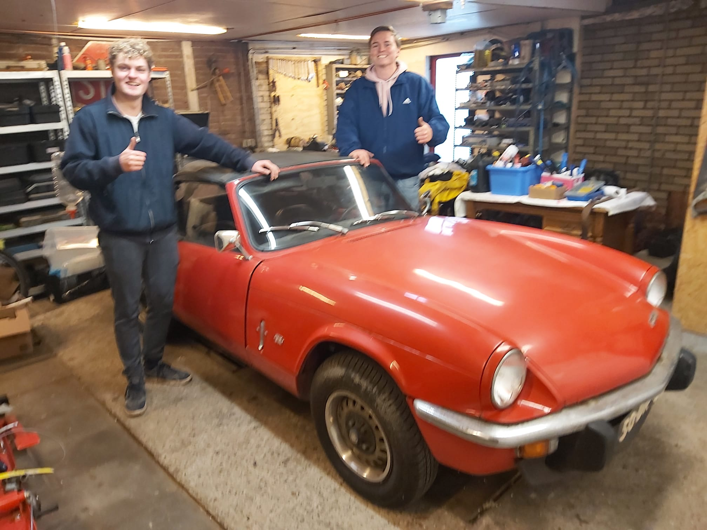

My father bought this Spitfire a long time ago as a gift for my mother. They made many trips to different countries across Europe. I also remember going for a ride with my father when I was seven years old.
In 2010, unfortunately, the car broke down and was put into storage. After 14 years, in 2024, my father said to me — the only son studying a technical field — "Do you want to repair the Spitfire? Otherwise, I'm going to sell the car."
Below are the milestones of the restoration process.
This month, we transported the car from the storage facility to my parents' driveway. As you can see, the car had collected a lot of dust over the years. So, the first step was to clean the Spitfire.


After a thorough cleaning session, the car looked a lot better.
Vintage cars often can't be left outside during the winter. That's why, this month, we moved the Spitfire to a garage owned by Gijs' uncle. This garage is equipped with every tool a car enthusiast could wish for — which should help speed up the repairs.

This month, we managed to get the Spitfire running (see video). Unfortunately, it's not yet ready for the road. The clutch still needs work, as do the brakes, lights, handbrake, and interior.
This month, we successfully fixed the electrical system of the car, meaning it is now road-ready! (see video)